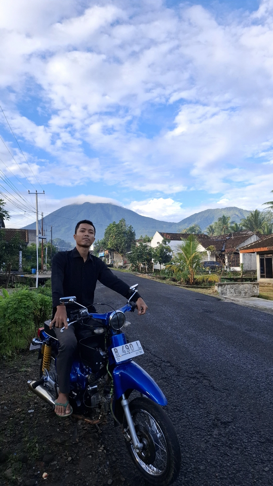

<!DOCTYPE html>
<html lang="en">
<head>
  <meta charset="UTF-8">
  <meta name="viewport" content="width=device-width, initial-scale=1.0">
  <title>Document</title>
</head>
<body>
  
</body>
</html><html lang="id">
<head>
  <meta charset="UTF-8" />
  <meta name="viewport" content="width=device-width, initial-scale=1.0" />
  <title>Ferdi Kurniawan</title>
  <link rel="stylesheet" href="https://cdnjs.cloudflare.com/ajax/libs/font-awesome/6.5.0/css/all.min.css" />
  <link href="https://fonts.googleapis.com/css2?family=Poppins:wght@400;700&display=swap" rel="stylesheet">
  <style>
    * {
      margin: 0;
      padding: 0;
      box-sizing: border-box;
      font-family: 'Poppins', sans-serif;
    }

    body {
      background: linear-gradient(to right, #667eea, #764ba2);
      color: white;
      min-height: 100vh;
      display: flex;
      flex-direction: column;
      align-items: center;
      justify-content: center;
      padding: 20px;
      text-align: center;
    }

    .profile {
      margin-bottom: 20px;
    }

    .profile img {
      width: 300px;
      height: 300px;
      border-radius: 50%;
      border: 4px solid rgba(255, 255, 255, 0.3);
      box-shadow: 0 0 20px rgba(0, 0, 0, 0.3);
      object-fit: cover;
      transition: transform 0.3s;
    }

    .profile img:hover {
      transform: scale(1.05);
    }

    .profile h1 {
      margin-top: 15px;
      font-size: 28px;
      font-weight: 700;
    }

    .tagline {
      font-size: 16px;
      margin-top: 8px;
      font-style: italic;
      color: #f0f0f0;
    }

    .intro {
      margin-top: 10px;
      font-size: 16px;
      font-weight: 400;
    }

    .social-media {
      display: flex;
      gap: 25px;
      margin-top: 25px;
      justify-content: center;
    }

    .social-media a {
      colorre;
      font-size: 28px;
      transition: transform 0.3s, color 0.3s;
    }

    .social-media a:hover {
      transform: scale(1.2);
      color: #e9ca1e;
    }
  </style>
  <div class="profile">
    
    <h1>Ferdi Kurniawan</h1>
    <p class="tagline">Tidak ada opsi menyerah, selagi mata masih terbuka</p>
    <p class="intro">Mari bersilaturahmi melalui platform berikut:</p>
  </div>

  <div class="social-media">
    <a href="https://instagram.com/ferdi_krn" target="_blank" aria-label="Instagram">
      <i class="fab fa-instagram"></i>
    </a>
    <a href="https://www.facebook.com/share/1AMM84PcMx/" target="_blank" aria-label="Facebook">
      <i class="fab fa-facebook"></i>
    </a>
    <a href="https://wa.me/+6285664715402" target="_blank" aria-label="WhatsApp">
      <i class="fab fa-whatsapp"></i>
    </a>
    <a href="https://youtube.com/@ferdikurniawan-k3d?si=HvmAddGiNUMtGCv6" target="_blank" aria-label="YouTube">
      <i class="fab fa-youtube"></i>
    </a>
  <style>@media (max-width: 768px) {
  .profile img {
    width: 160px;
    height: 160px;
  }

  .profile h1 {
    font-size: 22px;
  }

  .tagline,
  .intro {
    font-size: 15px;
  }

  .social-media {
    gap: 20px;
    flex-wrap: wrap;
  }

  .social-media a {
    font-size: 30px;
  }

  body {
    padding: 15px;
  }
}